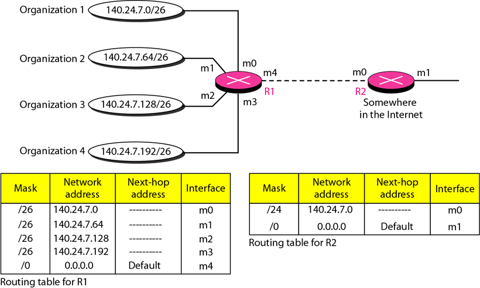
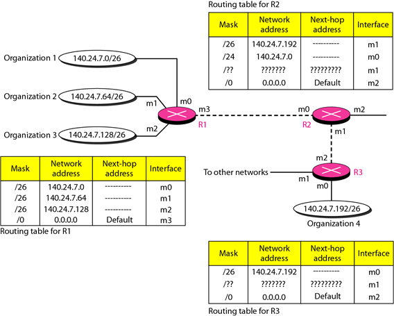
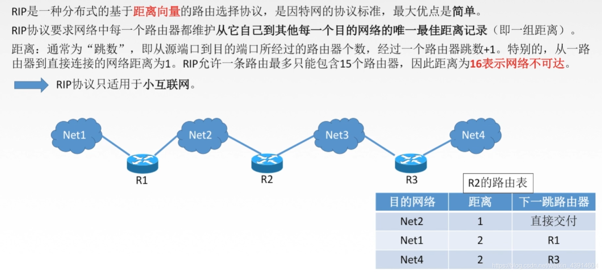
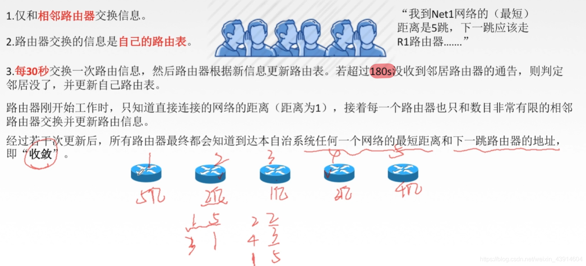
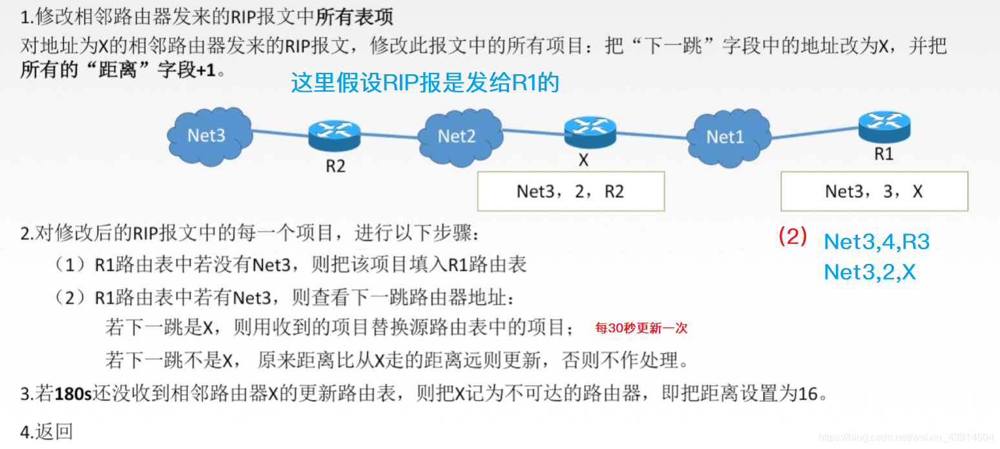
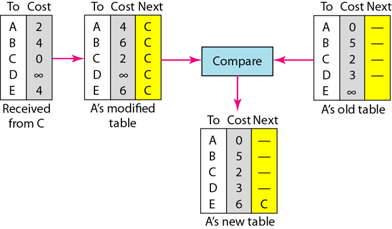
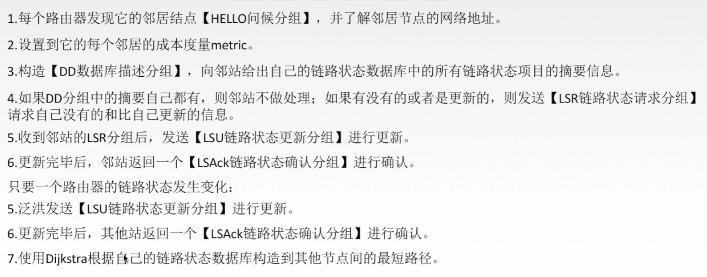
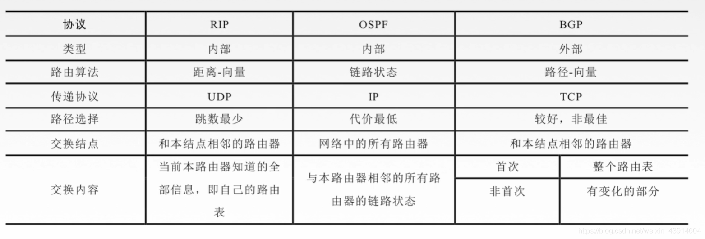

第 22 章 传递、转发和路由选择
一. 转发技术与转发过程
转发技术
- 下一条方法: 路由表中仅保存下一跳的地址
- 路由方法: 路由表中保存完整的路由信息
- 特定网络方法: 将连接在整个网络上的主机视为同一个条目
- 特定主机方法: 每台主机一个条目
- 默认方法: 表里有的按表来, 没有的同一扔到一个端口
转发过程
- 采用无类寻址
- 表中包含掩码, 网络地址, 下一跳地址, 接口
- 过程
- 将每个条目的掩码与接收到的分组的目的地址相与, 判断是否符合网络地址
- 若不符合, 则比较下一条
- 若符合, 准备通过对应的下一跳地址和端口转发, 可能需要 ARP
- 若无符合条目, 按默认条目转发
二. 路由表、地址聚合和最长掩码匹配
路由表
静态路由表：
static routing table
- 包含有人工输入的信息。
- 当路由表生成后，因特网中的变化无法自动在路由表中进行自动更新。路由表必须由网络管理员手工改变。
动态路由表：
dynamic routing table
- 使用一个动态路由选择协议，如RIP，OSPF或BGP，因而可以周期性地进行更新。
- 当因特网中发生变化时，例如当某个路由器关闭或某条链路中断，动态路由选择协议就自动更新所有路由器(最后也将在所有主机中)的路由表。
地址聚合
- 对网络的其他部分, 将连续的地址块儿通过缩短掩码的长度来将其是为一个地址
- 使用无类寻址时，由于将整个地址空间划分为可管理地址块，会导致路由表的项目数量增多，进一步增加查找时间，因此设计地址聚合。

在 R2 看来, 组织 14 是同一个地址, 只占一个条目, 只需要转发到 m0 接口就行
至于组织 14 之间各自的分组转发, 由 R1 负责
最长掩码匹配
无类寻址的路由使用最长掩码匹配原则。
在路由表中掩码存放按照最长到最短的次序存放。

三. 单播路由协议
路由协议的分类及典型的路由协议(RIP、OSPF、BGP)，AS 的概念、RIP 协议和 OSPF 协议、Dijkstra、Bellmanford 算法计算路由表及最小生成树
自治系统AS
自治系统 autonomous system
- 一个单一的管理机构管辖下的一组网络和路由器
- 在as之间的路由器选择成为域间路由选择
路由选择信息协议RIP
路由选择信息协议 Rounting information protocol
概述

RIP协议和谁交换？交换什么？多久交换一次？

距离向量算法


距离向量更新
开放最短路径优先OSPF
开放最短路径优先 open shortest path first protocol
- 是分布式的链路状态协议
- 直接用IP数据报传送
- 向本自治系统中所有路由器发送信息，这里使用的方法是洪泛法。(将信息广播出去)
- 发送的信息就是与本路由器相邻的所有路由器的链路状态，但这只是路由器所知道的部分信息。
- “链路状态”就是说明本路由器都和哪些路由器相邻，以及该链路的“度量”(metric)。
- 度量：每一个路由指定的一个代价
- 只有当链路状态发生变化时，路由器才用洪泛法向所有路由器发送此信息(变化就发送)–>OSPF报文比RIP报文传播速度快
- 常用于大规模的互联网
链路状态路由算法

类型1，问候(Hello)分组。
类型2，数据库描述(Database Description)分组。
类型3，链路状态请求(Link State Request)分组。
类型4，链路状态更新(Link State Update)分组，
用洪泛法对全网更新链路状态。
类型5，链路状态确认(Link State Acknowledgment)分组。
边界网关协议BGP
- BGP 是不同自治系统的路由器之间交换路由信息的协议。
- 与其他AS的邻站BGP发言人交换信息
- 交换到达某个网络所要经过的AS
- 在BGP 刚刚运行时，BGP 的邻站是交换整个的 BGP 路由表；后面发送变化时更新变化的部分
- 支持CIDR
(1) 打开(Open)报文，用来与相邻的另一个BGP发言人建立关系。
(2) 更新(Update)报文，用来发送某一路由的信息，以及列出要撤消的多条路由。
(3) 保活(Keepalive)报文，用来确认打开报文和周期性地证实邻站关系。
(4) 通知(Notificaton)报文，用来发送检测到的差错。
三种路由协议比较

Dijkstra
Bellmanford
四. 多播的概念和多播路由协议(了解)